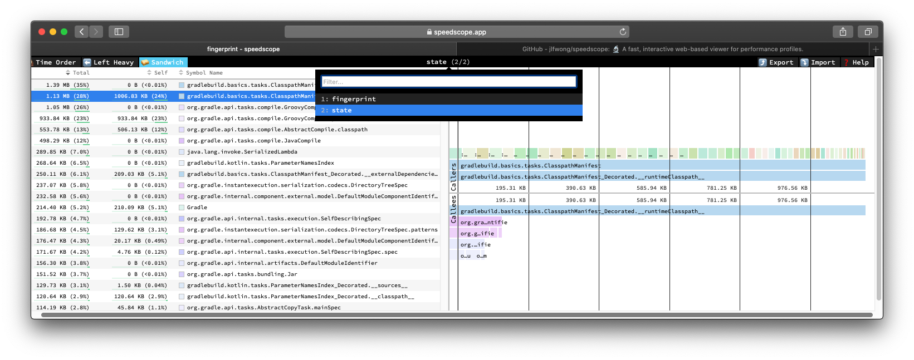
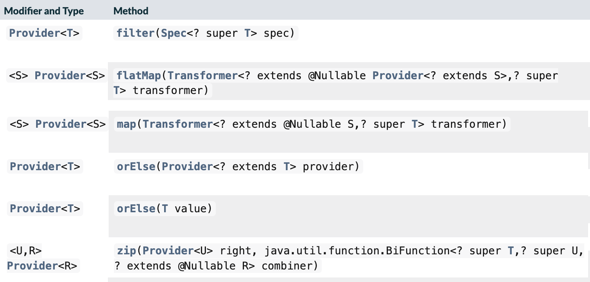

abstract class SomeTask : DefaultTask() {
@get:Input lateinit var sourceSet: SourceSet
@TaskAction
fun action() {
val classpathFiles = sourceSet.compileClasspath.files
// ...
}
}The road to Gradle 9
Louis Jacomet
Paul Merlin
Devoxx France 2024
What are we talking about today?
📋
A few build questions …
Who has a long build?
1 hour and more?
30 minutes and more?
5 minutes and more?
less than a minute?
Who has a complex build setup?
Who is happy to use a build tool?
And which build tool?
Who uses Gradle?
Who uses Maven?
Who uses both?
Who uses neither?
Agenda
Performance as a feature
Faster compilation
Configuration cache
Isolated projects
Build comprehensibility
Build problems
Laziness as a solution
Modeling
A peek into the future
Who are we?
🧑💻 🧑💻
Since 2008, our mission is to improve developer productivity.
Software build tool under Apache license.
Top 20 in popular open source projects according to TechCrunch with over 40 millions monthly downloads.

Develocity, commercial solution, is the first integrated platform for Developer Productivity Engineering (DPE)
Developer Productivity Engineering
Developer Productivity Engineering (DPE) is a software development practice used by leading software development organizations to maximize developer productivity and happiness.
|
Build Scans
Permanent record
of everything that happens in a build.


Performance as a feature
🚀
Faster compilation
What is compilation avoidance?

Compilation avoidance in practice
Since Gradle 3.4 (Feb 2017)
No recompilation between projects if ABI did not change
Smaller compilation classpath thanks to
api/implementationseparation
Can it go faster?
Compiler daemons
Reuse the Java compiler process across tasks and builds
Active by default since Gradle 8.4
Kotlin and Scala have their own support for this
What’s up with 8.0 vs 8.1?
Gradle Configuration Cache
Gradle Configuration Cache
The Configuration Cache is
a feature that significantly improves build performance
by caching the result of the configuration phase
and reusing this for subsequent builds.
Gradle Configuration Cache
Enable it Today, it is stable since Gradle 8.1!
--configuration-cacheon the command lineorg.gradle.configuration-cache=true
in yourgradle.properties
Gradle build anatomy

Bars not to scale
Configuration phase
Apply plugins
Execute build logic
Compute task graph
Selecting and configuring requested tasks
and their dependencies
Caching build configuration

What is cached?
Task graph
Task inputs
All the rest is discarded
No
projectstate anymore
Requirements
No live JVM types
Classloaders, I/O streams, threads, etc.
No Gradle model types
Including dependency management types
Example of invalid input
needs to become
abstract class SomeTask : DefaultTask() {
@get:InputFiles @get:Classpath
abstract val classpath: ConfigurableFileCollection
@TaskAction
fun action() {
val classpathFiles = classpath.files
// ...
}
}configured with
classpath.from(sourceSet.compileClasspath)Why does it matter?
Configuration time goes down to almost zero
Valid configuration cache gives stronger guarantees for task isolation
Which allows Gradle tasks to run
sooner
in parallel
including inside a single project
Demo
Can I use it on my build?
It depends on your build
Most plugins out there are already compatible
You can selectively declare incompatible tasks
tasks.some { notCompatibleWithConfigurationCache("because") }You may have to refactor custom build-logic
This is about applying best practices anyway
Configuration Cache Report
Useful to understand CC inputs
Built-in
Configuration Cache Report
Useful to understand CC problems
Got much nicer in Gradle 8.7 with filtered exceptions
Space Usage Analysis
Useful if your cached state is too big
External tool gradle/gcc2speedscope
Helps identify "task state leaks"

What performance benefits?
It depends on your build
It’s not only about avoiding the configuration phase
All tasks will run in parallel, always
Configuration model memory can be freed
Small builds will mostly benefit from more parallelism
Large builds will also benefit from avoided configuration
What performance benefits?
For example: Square, on a large Android build
Early adopters - Blog Post - December 2022
Saving 5,400 hours a year with Gradle’s Configuration Cache
Recovering an estimated $1.1 million in lost productivity annually
Limitations
What about the work of the build engineer?
What about dependency upgrades and other build focused engineering tasks?
Isolated Projects
Did you say cache miss?
On a miss, the configuration phase needs to run
But, with no shared mutable state between projects, it could
Run in parallel
following the projects hierarchy
Be cached incrementally
task sub-graphs cached per project
More constraints
No mutable cross project access during configuration
Example: No
allprojectsorsubprojectsthat mutates project configuration
Progressive adoption
Isolated Projects detects violations
aka. configuration-coupling between projects
Creating buckets of coupled projects
Configuring and caching them in parallel and incrementally
Isolated Projects Status
Alpha experiment on top of the Configuration Cache
Interesting for early adopters
Focuses on speeding up the IDE experience first
Build comprehensibility
💡
Error, warning Help messages
Builds do fail, and that’s okay
What matters is how easy it is to
diagnose the problem
fix the problem
Assertion error handling

Assertion error handling: improved

Variant-aware dependency resolution errors
FAILURE: Build failed with an exception.
* What went wrong:
Execution failed for task ':libs:proto:extractIncludeTestProto'.
> Could not resolve all files for configuration ':libs:proto:testCompileProtoPath'.
> Could not resolve io.kotest:kotest-runner-junit5-jvm:4.1.0.293-SNAPSHOT.
Required by:
project :libs:proto
> The consumer was configured to find a component, preferably only the resources files. However we cannot choose between the following variants of io.kotest:kotest-runner-junit5-jvm:4.1.0.293-SNAPSHOT:20200519.105809-1:
- jvm-api
- jvm-runtime
- metadata-api
All of them match the consumer attributes:
- Variant 'jvm-api' capability io.kotest:kotest-runner-junit5-jvm:4.1.0.293-SNAPSHOT declares a component, packaged as a jar:
- Unmatched attributes:
- Provides integration status but the consumer didn't ask for it
- Provides an API but the consumer didn't ask for it
- Provides attribute 'org.jetbrains.kotlin.platform.type' with value 'jvm' but the consumer didn't ask for it
- Variant 'jvm-runtime' capability io.kotest:kotest-runner-junit5-jvm:4.1.0.293-SNAPSHOT declares a component, packaged as a jar:
- Unmatched attributes:
- Provides integration status but the consumer didn't ask for it
- Provides a runtime but the consumer didn't ask for it
- Provides attribute 'org.jetbrains.kotlin.platform.type' with value 'jvm' but the consumer didn't ask for it
- Variant 'metadata-api' capability io.kotest:kotest-runner-junit5-jvm:4.1.0.293-SNAPSHOT:
- Unmatched attributes:
- Doesn't say anything about its elements (required them preferably only the resources files)
- Provides integration status but the consumer didn't ask for it
- Provides a usage of 'kotlin-api' but the consumer didn't ask for it
- Provides attribute 'org.jetbrains.kotlin.platform.type' with value 'common' but the consumer didn't ask for itSpecific errors for common issues
FAILURE: Build failed with an exception.
* What went wrong:
A problem occurred configuring root project 'example'.
> Could not resolve all files for configuration ':classpath'.
> Could not resolve com.example:plugin:1.0.
Required by:
project : > com.example.greeting:com.example.greeting.gradle.plugin:1.0
> Plugin com.example:plugin:1.0 requires at least Gradle 8.0. This build uses Gradle 7.6.
* Try:
> Upgrade to at least Gradle 8.0. See the instructions at https://docs.gradle.org/8.7/userguide/upgrading_version_8.html#sub:updating-gradle.
> Downgrade plugin com.example:plugin:1.0 to an older version compatible with Gradle 7.6.Next in 8.8: JVM version mismatch
Better build output
Better structured
Actionable
Documented
Concrete example - before
FAILURE: Build failed with an exception.
* What went wrong:
Execution failed for task ':dependencies'.
> Could not resolve all dependencies for configuration ':lockedConf'.
> Invalid lock state for lock file specified in '<project>/lock.file'. Line: <<<<<<< HEAD For more information on formatting, please refer to https://docs.gradle.org/8.5/userguide/dependency_locking.html#lock_state_location_and_format in the Gradle documentation.Concrete example - after
FAILURE: Build failed with an exception.
* What went wrong:
Execution failed for task ':dependencies'.
> Could not resolve all dependencies for configuration ':lockedConf'.
> Invalid lock state for lock file specified in '<project>/lock.file'. Line: '<<<<<<< HEAD'
* Try:
> Verify the lockfile content. For more information on lock file format, please refer to https://docs.gradle.org/8.6/userguide/dependency_locking.html#lock_state_location_and_format in the Gradle documentation.Laziness as a solution
The Gradle task graph

Challenge: Evaluation Ordering
Evaluation ordering
afterEvaluatedoes not scaleHow "after" do you need to be?
Challenge: Execution Ordering
Tasks produce files
How do you make sure the consumer of that file
dependsOnthe producing task?
Example
val customTask = tasks.register<ComputeArtifactId>("customTask")
subprojects {
publishing {
publications {
create<MavenPublication>("mavenJava") {
from(components["java"])
afterEvaluate {
artifactId = customTask.get().artifactId.get()
}
}
}
}
}Solution

Provider API: Evaluation Ordering
Wire and derive values
Without caring about when it is set
Evaluation is done on demand
Task does not run → No inputs are computed
Provider API: Execution Ordering
Task output properties
used as input to another task
track task dependencies automatically.
val producer = tasks.register<Producer>("producer")
val consumer = tasks.register<Consumer>("consumer")
consumer {
// Connect the producer task output to the consumer task input
// Don't need to add a task dependency to the consumer task.
// This is automatically added
inputFile = producer.flatMap { it.outputFile }
}
producer {
// Set values for the producer lazily
// Don't need to update the consumer.inputFile property.
// This is automatically updated as producer.outputFile changes
outputFile = layout.buildDirectory.file("file.txt")
}
// Change the build directory.
// Don't need to update producer.outputFile and consumer.inputFile.
// These are automatically updated as the build directory changes
layout.buildDirectory = layout.projectDirectory.dir("output")Provider API - Lazy

Provider API - Eager

Adoption challenge
Existing Gradle API is large
Lots of "properties" to convert
Alternative (minor) → Deprecation (minor) → Removal (major)
Disruptive cycle
Long cycle
Bridging plain properties and Provider API is awkward
In short, does not scale
buildDir example
// Returns a java.io.File
file("$buildDir/myOutput.txt")to be replaced with
// Compatible with a number of Gradle lazy APIs that accept also java.io.File
val output: Provider<RegularFile> = layout.buildDirectory.file("myOutput.txt")
// If you really need the java.io.File for a non lazy API
output.get().asFile
// Or a path for a lazy String based API
output.map { it.asFile.path }Kotlin DSL assignment
interface Extension {
val description: Property<String>
}
// register "extension" with type Extension
extension {
// Using the set() method call
description.set("Hello Property")
// Using lazy property assignment
description = "Hello Property"
}Demo
Provider API migration
Do a large scale migration of Gradle APIs in Gradle 9.0
Supported by automatic conversion for plugins
Requires polishing the Provider API itself
Does not resolve the adoption by community plugins
Modeling
Raising the abstraction
Gradle has an amazing execution model
But leveraging it requires expertise
Common use cases are not always easy to express
Adding a test suite
sourceSets {
create("intTest") {
compileClasspath += sourceSets.main.map { it.output }
runtimeClasspath += sourceSets.main.map { it.output }
}
}
configurations["intTestImplementation"].extendsFrom(configurations.implementation.get())
configurations["intTestRuntimeOnly"].extendsFrom(configurations.runtimeOnly.get())
dependencies {
"intTestImplementation"("junit:junit:4.13")
}Modern test suite
testing {
suites {
register<JvmTestSuite>("integrationTest") {
dependencies {
implementation("junit:junit:4.13")
}
}
}
}Going further with dependency declarations
Introduce a
dependenciesblockThat can be reused in different contexts
Where configuration names are the same but contextual
Matches patterns from other ecosystems like Android or Kotlin
Kotlin Multi platform example
kotlin {
sourceSets {
commonMain.dependencies {
// kotlinx.coroutines will be available in all source sets
implementation("org.jetbrains.kotlinx:kotlinx-coroutines-core:1.7.3")
}
androidMain.dependencies {}
iosMain.dependencies {
// SQLDelight will be available only in the iOS source set, but not in Android or common
implementation("com.squareup.sqldelight:native-driver:2.0.0")
}
}
}Peeking into the future
🔮
Gradle 9 objectives
üêò
Gradle 9 objectives
🚀 Performance
💡 Comprehensibility
üêò Miscellaneous
Gradle 9 - 🚀 Performance
Configuration Cache by default
With an opt-out
Deprecation warning if not enabled in 8.x
Isolated Projects as incubating
As an opt-in
Ready for early adopters
Stable as a stretch goal
Gradle 9 - 💡 Comprehensibility
Provider API 1.0
Feature complete for supported use cases
Provider API Migration
Binary compatible migration for 3rd party plugins
Source-compatible migration for local build logic
Gradle 9 - üêò Miscellaneous
Kotlin Language 2.0 support in our Kotlin DSL
Use the K2 compiler and benefit from its performance
Problems API
Many bug fixes and improvements
Gradle 9.0
Q4 2024 release (tentative)
Declarative Gradle
üêò
Declarative Gradle
The presence of code constructs in the software definition, such as variables, local methods and conditional expressions, makes it hard for software developers to work with the build.
It also makes refactoring more difficult for the IDE and other tools to implement.
Declarative Gradle
Clear separation of software definition from build logic
Declarative configuration language
Raised abstraction
First class IDE experience
Declarative Gradle
New experimental initiative
Working group with Google, JetBrains and Gradle.
First blog post in November 2023
Early prototypes already available
First EAP scheduled mid-2024
Peek at current prototype
A Java library
javaLibrary {
javaVersion = 21
dependencies {
implementation("com.google.guava:guava:32.1.3-jre")
}
}A Java application
javaApplication {
javaVersion = 21
mainClass = "com.example.App"
dependencies {
implementation("com.google.guava:guava:32.1.3-jre")
}
}- Disclaimer
This will certainly change
Peek at current prototype
An Android application
androidApplication {
jdkVersion = 17
compileSdk = 34
versionCode = 8
versionName = "0.1.2"
applicationId = "org.gradle.experimental.android.application"
namespace = "org.gradle.experimental.android.application"
dependencies {
implementation("com.google.guava:guava:32.1.3-jre")
implementation(project(":android-util"))
}
buildTypes {
release {
dependencies {
implementation("com.squareup.okhttp3:okhttp:4.2.2")
}
minifyEnabled = true
}
debug {
applicationIdSuffix = ".debug"
}
}
}Peek at current prototype
A Kotlin Multiplatform Library
kmpLibrary {
dependencies {
implementation("org.jetbrains.kotlinx:kotlinx-datetime:0.4.1")
}
targets {
jvm {
jdkVersion = 14
dependencies {
api("org.apache.commons:commons-lang3:3.14.0")
}
}
js {
environment = "node"
dependencies {
implementation("com.squareup.sqldelight:runtime:1.5.5")
}
}
}
}Peek at current prototype
Disclaimer: this will certainly change
Prototypes available at gradle/declarative-gradle
Now In Android fork -
main-declarativebranchYou can import it in Android Studio
Android Studio Koala canary builds have syntax highlighting for declarative files
Declarative Gradle
New experimental initiative
Clear separation of software definition from build logic
Declarative configuration language
Raised abstraction
First class IDE experience
First EAP scheduled mid-2024
Thank you!
|